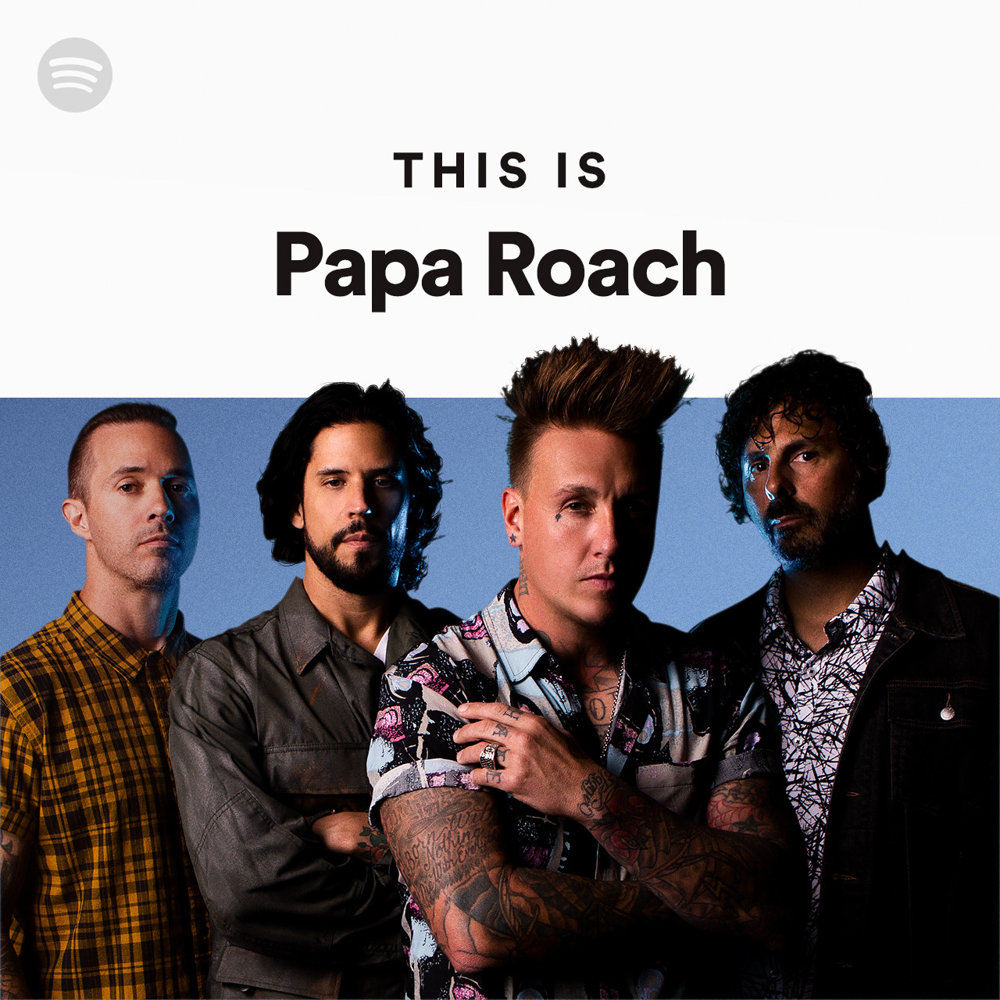

Personal information
- Jelle Gemin
- Hoge Ieperweg 2, 8650 Merkem
- 0489 94 31 16
- jelle.gemin@student.vives.be

Hobbies
- Voetbal
- Guitaar
- Jeugdbeweging KAJ Jonkershove
Ik voetbal bij Merkem Sport, de website is verlopen. Hier is een link naar de informatie over de club: Voetbal Vlaanderen
Tijden de corona pandemie nam ik de tijd om een instrument te leren spelen. Aangezien mijn broer, vaden en zus allemaal ook guitaar spelen,
leek het mij logisch om ook guitaar te leren om eventueel soms samen te spelen.
Ik leerde guitaar spelen via een youtube influencer: Link naar de youtuber
Sinds mijn 12e ben ik lid van een jeugdbeweging in Jonkershove. Ik ben nog altijd lid hierbij en blijf mij amuseren.
Link naar de website: Kaj Jonkershove
Likes
- Favourite band & muziek genre
Ik ben altijd al fan geweest van rock 'n roll en punk muziek. Ik luister dit dan ook al bijna gans mijn leven.
Ik moet toch zeggen dat mijn favourite band 'Papa Roach' is. Hier is een link naar hun merch site, ze hebben namelijk geen andere
Merch site
